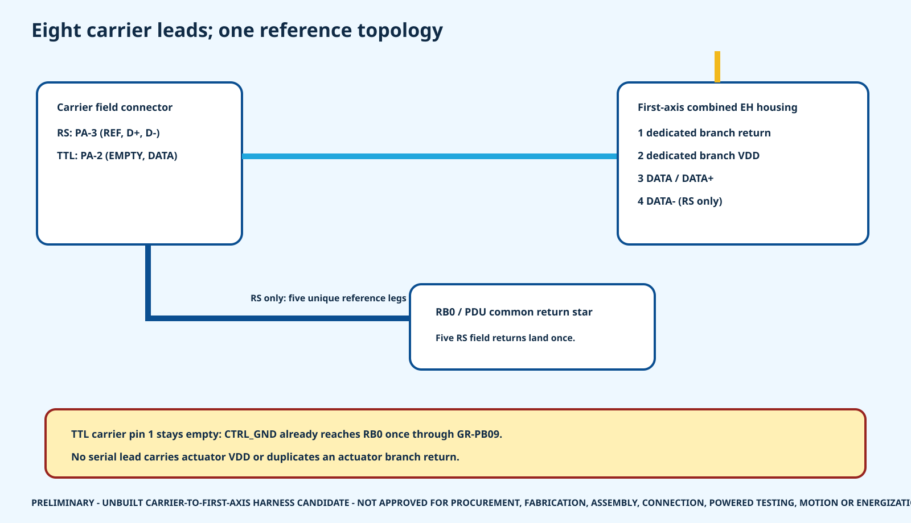

8 / 8
carrier-to-first-axis maps defined
HR-30 whole-body P0.1
Five isolated RS-485 channels split data from a unique star-reference leg. Three TTL channels carry data only and leave the carrier reference cavity empty.
carrier-to-first-axis maps defined
isolated RS-485 and non-isolated TTL topologies
controlled contact-map rows
built, routed or electrically tested harnesses

JST GH and EH housing/contact families are bound, but no conductor is released. The current RS candidate is too large for a direct GH crimp, and the current TTL candidate exceeds the published GH conductor maximum. A compatible cable or a qualified transition splice is still required.
| Assembly | Protocol | Carrier end | First-axis end | Planning length | Reference path | State |
|---|---|---|---|---|---|---|
| CFA-RS-LLEG | RS-485 HALF-DUPLEX | J101 / GHR-03V-S | J-ACT-L_HIP_YAW / EHR-4 | 39.209 mm | J10x.1 FIELD RETURN TO UNIQUE RB0 STAR LANDING | CONTACT MAP DEFINED - CONDUCTOR, STAR TERMINAL, CRIMP, ROUTE AND TEST RELEASE OPEN |
| CFA-RS-RLEG | RS-485 HALF-DUPLEX | J102 / GHR-03V-S | J-ACT-R_HIP_YAW / EHR-4 | 39.209 mm | J10x.1 FIELD RETURN TO UNIQUE RB0 STAR LANDING | CONTACT MAP DEFINED - CONDUCTOR, STAR TERMINAL, CRIMP, ROUTE AND TEST RELEASE OPEN |
| CFA-RS-LARM | RS-485 HALF-DUPLEX | J103 / GHR-03V-S | J-ACT-L_SHOULDER_PITCH / EHR-4 | 41.794 mm | J10x.1 FIELD RETURN TO UNIQUE RB0 STAR LANDING | CONTACT MAP DEFINED - CONDUCTOR, STAR TERMINAL, CRIMP, ROUTE AND TEST RELEASE OPEN |
| CFA-RS-RARM | RS-485 HALF-DUPLEX | J104 / GHR-03V-S | J-ACT-R_SHOULDER_PITCH / EHR-4 | 41.794 mm | J10x.1 FIELD RETURN TO UNIQUE RB0 STAR LANDING | CONTACT MAP DEFINED - CONDUCTOR, STAR TERMINAL, CRIMP, ROUTE AND TEST RELEASE OPEN |
| CFA-RS-WAIST | RS-485 HALF-DUPLEX | J105 / GHR-03V-S | J-ACT-WAIST_YAW / EHR-4 | 52.373 mm | J10x.1 FIELD RETURN TO UNIQUE RB0 STAR LANDING | CONTACT MAP DEFINED - CONDUCTOR, STAR TERMINAL, CRIMP, ROUTE AND TEST RELEASE OPEN |
| CFA-TTL-LDIST | TTL HALF-DUPLEX | J201 / GHR-02V-S | J-ACT-L_WRIST_ROTATION / EHR-3 | 299.581 mm | NO FIELD REFERENCE CONDUCTOR; CTRL_GND USES ONLY GR-PB09 TO RB0 | CONTACT MAP DEFINED - CONDUCTOR, STAR TERMINAL, CRIMP, ROUTE AND TEST RELEASE OPEN |
| CFA-TTL-RDIST | TTL HALF-DUPLEX | J202 / GHR-02V-S | J-ACT-R_WRIST_ROTATION / EHR-3 | 299.581 mm | NO FIELD REFERENCE CONDUCTOR; CTRL_GND USES ONLY GR-PB09 TO RB0 | CONTACT MAP DEFINED - CONDUCTOR, STAR TERMINAL, CRIMP, ROUTE AND TEST RELEASE OPEN |
| CFA-TTL-HEAD | TTL HALF-DUPLEX | J203 / GHR-02V-S | J-ACT-HEAD_PAN / EHR-3 | 99.202 mm | NO FIELD REFERENCE CONDUCTOR; CTRL_GND USES ONLY GR-PB09 TO RB0 | CONTACT MAP DEFINED - CONDUCTOR, STAR TERMINAL, CRIMP, ROUTE AND TEST RELEASE OPEN |
Assembly register | 37-contact map | Route legs | Candidate BOM | Test plan | Blank inspections | Open holds | Sources
This closes a definition gap, not a physical or energization gate.